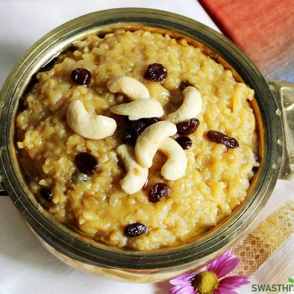

Sweet Pongal

Sweet Pongal, also known as Sakkarai Pongal or Chakkara Pongal, is a cherished South Indian dessert, especially significant during the Pongal harvest festival. It's a creamy, rich, and flavorful dish made primarily from raw rice, moong dal (yellow lentils), and jaggery (unrefined cane sugar).
Ingredients
- Raw Rice
- Moong Dal (Yellow Split Lentils)
- Jaggery
- Ghee
- Cardamom Powder
- Cashews
- Raisins
- Water
Steps
- Prepare the Rice and Moong Dal
- Wash the rice and moong dal thoroughly in several changes of water.
- You can optionally dry-roast the moong dal in a pan over low heat for a few minutes until a slight aroma arises. This can enhance its flavor.
- Cook the Rice and Moong Dal
- In a pot or pressure cooker, combine the washed rice and moong dal with the required amount of water (usually about 2-3 times the volume of rice and dal)
- Cook until the rice and dal are very soft and mushy. If using a pot, this will take longer. If using a pressure cooker, cook for a few whistles (usually 3-4) on medium heat and let the pressure release naturally. The mixture should be easily mashable.
- Prepare the Jaggery Syrup
- In a separate saucepan, add the jaggery and a little water (just enough to dissolve the jaggery).
- Heat the mixture over medium heat, stirring continuously until the jaggery is completely dissolved and you have a smooth syrup.
- Strain the jaggery syrup through a fine-mesh sieve to remove any impurities.
- Combine the Cooked Rice-Dal and Jaggery Syrup
- Pour the strained jaggery syrup into the pot with the cooked rice and moong dal.
- Mix well and cook on low to medium heat, stirring continuously, until the mixture thickens and the flavors meld together. Be careful as it can splatter.
- Add Ghee and Cardamom
- Add a generous amount of ghee to the Pongal and mix well. The ghee adds richness and a beautiful sheen.
- Stir in the cardamom powder for its fragrant aroma.
- Roast the Nuts and Raisins (Garnish)
- In a small pan, heat some ghee.
- Add the cashews and roast them until they turn light golden brown.
- Add the raisins and sauté until they plump up. Be careful not to burn them.
- Garnish and Serve
- Pour the roasted cashews and raisins along with the ghee into the Sweet Pongal and mix gently.
- If using, add a tiny pinch of edible camphor or nutmeg powder at this stage.
- Serve the Sweet Pongal hot or warm. It's often enjoyed as a prasadam or a festive dessert.
Home